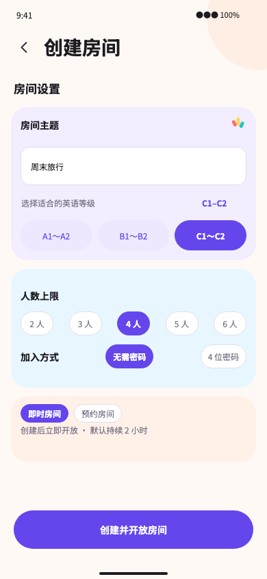
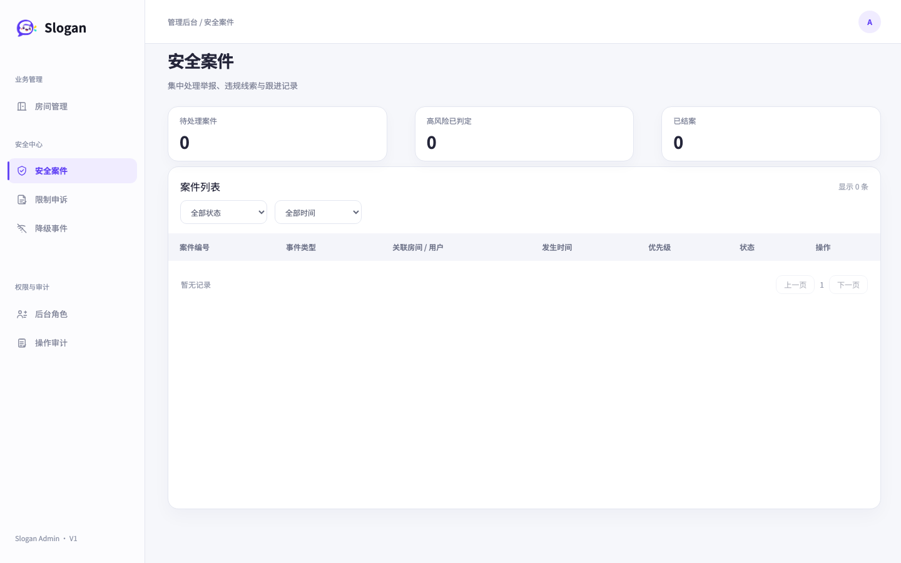
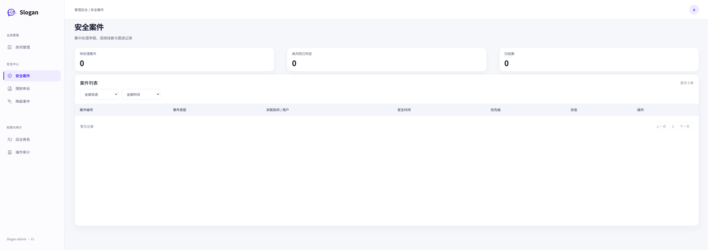
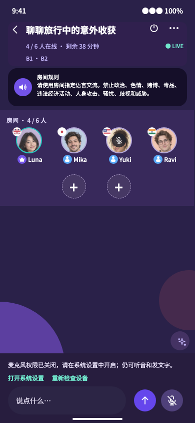

Create room · 390×844


Original Figma images are unchanged. The three proficiency-range buttons, removal of discoverability/audio-processing controls, wide-screen admin layout, and in-room device-error feedback are user-approved changes. Runtime images show actual local components with explicit account, room, and device-state fixtures; they do not replace Android device acceptance.




Permanent permission denial provides system-settings and recheck actions. The microphone remains muted by default; the user is not sent back to the preparation page.